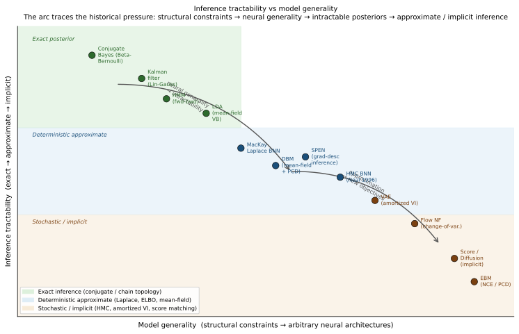
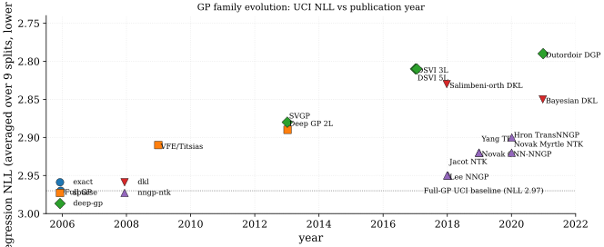

Probabilistic Foundations for Deep Learning
Thesis. Probabilistic inference cannot be separated from the learning algorithm and its scalability constraints. Classical graphical models (HMMs, Kalman filters, LDA) solve inference exactly, but only for special structures. When neural networks are used as model components, structural constraints dissolve and inference becomes intractable. That intractability is not a side-effect to be engineered away: it is the organizing pressure that forces variational objectives (the ELBO), approximate inference families (amortized encoders, score matching), and ultimately changes what "inference" even means. The field did not merely apply neural nets to probabilistic models; intractability reshaped the objectives and the notion of inference itself.
The four families below follow the arc that pressure created: exact-but-structured (classical graphical models); general-but-intractable (neural model components); approximation-as-necessity (ELBO, variational families, score matching); and new objectives and meanings (amortized inference, implicit models, denoising).
Exact Inference under Structural Constraints
The Bayesian formalism was systematized for data analysis by (Gelman et al. 2013 Ch 1-2), building on a philosophical foundation laid out by (Jaynes 2003) that frames probability as extended logic rather than as long-run frequency. The contemporary pedagogical synthesis is (Murphy 2022 Ch 4-5), which unifies frequentist maximum-likelihood, MAP estimation, and fully Bayesian inference within a single probabilistic-graphical-model vocabulary. Earlier textbook treatments include (Bishop 2006) and (MacKay 2003); the latter is notable for weaving Bayesian inference, information theory, and coding theory into a single narrative.
Structured probabilistic modeling was codified in (Koller and Friedman 2009), which remains the canonical reference for directed and undirected graphical models, exact inference (variable elimination, junction trees), approximate inference (loopy belief propagation, MCMC), and learning. The dominant classical latent-variable models preceding deep learning are hidden Markov models, systematized for speech recognition by (Rabiner 1989); linear-Gaussian state-space models, introduced by (Kalman 1960) for linear filtering and control; and latent Dirichlet allocation, developed for document topic modeling by (Blei, Ng, and Jordan 2003). Discriminative structured prediction is represented by conditional random fields (Lafferty, McCallum, and Pereira 2001), which sidestep the locally-normalized exposure-bias issue of maximum-entropy Markov models.
What these models share is a structural assumption that makes the posterior integral tractable: the chain topology for HMMs and Kalman filters (enabling forward-backward and Kalman recursion), and Dirichlet-Multinomial conjugacy for LDA (enabling closed-form coordinate-ascent VI). The inference algorithm and the model structure are inseparable. This inseparability is the constraint that the neural-network era dissolves, and that dissolution is what forces the rest of the arc.
Neural Generality and the Emergence of Intractability
The bridge from classical Bayesian statistics to neural networks was built in the early 1990s. (MacKay 1992) introduced the Laplace-approximation evidence framework, showing that weight-decay regularization has a principled Bayesian interpretation and that hyperparameters such as decay constants can themselves be optimized by maximizing the marginal likelihood. (Neal 1996) extended this to full-posterior inference via Hamiltonian Monte Carlo and, in the same monograph, proved that a one-hidden-layer network with Gaussian weights converges to a Gaussian process in the infinite-width limit. This result anchors the modern NNGP/NTK literature and is revisited in the Bayesian-deep-learning part of this book.
The problem is visible immediately in MacKay's and Neal's settings: the posterior over neural-network weights is no longer Gaussian, the Hessian is no longer positive-definite by construction, and the marginal likelihood integral has no closed form for nonlinear activation functions. MacKay used the Laplace approximation as a stand-in; Neal used HMC on networks with at most a few hundred parameters. Neither scales to modern architectures. Generality was purchased at the exact price of tractability, and what followed was a decades-long search for the right currency with which to pay that price.
Deep variants of the classical graphical-model archetypes (deep belief networks (Hinton, Osindero, and Teh 2006), deep Boltzmann machines (Salakhutdinov and Hinton 2009), and structured-prediction energy networks, SPENs, (Belanger and McCallum 2016)) encountered the same barrier. Replacing the compatibility function of a CRF with a neural energy (SPEN) makes exact partition-function computation intractable; the SPEN performs inference by gradient descent on the energy instead. Replacing the Gaussian emissions of an RBM with deeper nonlinear layers (DBM) destroys the bipartite block-Gibbs tractability and forces mean-field variational approximations for the positive phase. In each case the neural component was the source of generality and the source of intractability simultaneously.
Approximation as Necessity: ELBO, Variational Families, Score Matching
The unifying response to intractability was the evidence lower bound. (Dempster, Laird, and Rubin 1977) unified a scattered collection of iterative maximum-likelihood procedures (the Baum-Welch algorithm for hidden Markov models, Lindley and Smith's variance-component estimation, Hartley's incomplete-data MLE) under a single expectation-maximization (EM) scheme and proved monotone ascent of the incomplete-data log-likelihood. (Neal and Hinton 1998) subsequently recast EM as coordinate ascent on a free-energy functional:
which is tight when equals the true posterior and is a lower bound on the log-evidence otherwise. This free-energy lens subsumes wake-sleep (Hinton et al. 1995), variational Bayes (Attias 1999), mean-field VI for graphical models (Jordan et al. 1999), and the review of modern variational methods in (Blei, Kucukelbir, and McAuliffe 2017). The ELBO is not merely one of many inference techniques; it is the universal surrogate that becomes necessary precisely when the posterior integral in Bayes' theorem has no closed form.
A parallel response to the partition-function problem in undirected models is score matching. (Hyvärinen 2005) proposed minimizing the expected squared difference between the model score and the data score, thereby bypassing the partition function entirely:
The minimizer of equals the true model score under the data distribution whenever and the data density share support, with no requirement to compute or approximate . Score matching is the direct conceptual ancestor of denoising score matching and modern diffusion generative models, which train a neural score network by denoising rather than by evaluating the partition-function gradient.
New Objectives and New Meanings of Inference
The ELBO and score matching do not merely approximate classical inference; they change its meaning. In the amortized variational inference (VAE) framework of (Kingma and Welling 2014), the E-step of EM is replaced by a neural encoder that outputs variational parameters in a single forward pass, shared across all data points. Inference is no longer per-datum optimization; it is a function learned jointly with the model. The meaning of "posterior" shifts from "the exact posterior under this model" to "the variational approximation that maximizes the ELBO under this encoder family." These are not the same object, and the amortization gap (the residual optimality gap between the amortized and the per-datum optimal ) is a concrete measure of how far the new definition departs from the old one.
Score-based implicit models make the departure more radical. When a model is defined only through its score function , there is no explicit density, no partition function, and no marginal likelihood to lower-bound. The concept of "inference" in this setting refers to sampling via Langevin dynamics rather than computing a posterior. The model family, the inference procedure, and the training objective are inseparable in a way that has no counterpart in the classical graphical-model view.
The competitive landscape, summarized below, shows that by the mid-2010s purely discriminative deep classifiers surpassed generative graphical-model approaches on standard benchmarks, though the latter retained advantages in small-data, interpretable, or structured-output settings that motivate the renewed interest in probabilistic deep learning covered in the remainder of this book.
Inference Tractability vs Model Generality: The Landscape

State-of-the-Art Table: Inference Mechanisms Across Model Families
The following table organises the model families along the arc above, making explicit for each family whether inference is exact or approximate, what approximation is used when inference is intractable, and how scalability is achieved. Citations outside cells per convention.
| Model family | Inference (exact/approx.) | Approximation used | Scalability | Arc position |
|---|---|---|---|---|
| HMM | Exact (forward-backward) | None needed | ; scales to hundreds of states | Exact, chain-structured |
| Kalman / linear-Gaussian | Exact (Gaussian filter) | None needed | ; diagonal/low-rank variants | Exact, linear-Gaussian |
| LDA (mean-field VB) | Approx. (variational) | Mean-field ELBO; closed-form coord. asc. | Stochastic VI scales to 100M docs | Approx., conjugate structure |
| Linear-chain CRF | Exact marginals () | None for marginals; approx. for decoding | forward-backward | Exact, discriminative |
| MacKay Laplace BNN | Approx. (Laplace) | Second-order Taylor at MAP; GGN Hessian | KFAC / last-layer approximation | Approx., tractable at small scale |
| Neal HMC BNN | Stochastic ( MC err.) | HMC trajectory; leapfrog integrator | Intractable beyond 1k params | Stochastic, exact in limit |
| DBM + mean-field | Approx. (mean-field + PCD) | Factored Bernoulli MF; persistent chain | Requires PCD; fragile training | Approx. undirected |
| SPEN | Approx. (gradient descent) | Gradient descent on ; SSVM loss | Scales in label-space dim., not seq. len | Approx., neural energy |
| VAE (amortized VI) | Approx. (ELBO + encoder) | Amortized ; reparam. | Scales to large datasets / dim. latents | Amortized, new meaning |
| Score matching / EBM | Implicit (no density) | Score matching / NCE; Langevin sampling | Scales via denoising (diffusion) | Implicit, partition-free |
The table makes four structural points. First, exact inference is available only when graph topology (chain for HMM/Kalman/CRF) or algebraic structure (Gaussian-Gaussian, Dirichlet-Multinomial) provides closed-form posteriors; introducing a single neural component into any of these models destroys closure. Second, the Laplace approximation (MacKay) and mean-field VI (LDA, DBM) are the two classical deterministic surrogates, differing in whether the posterior is approximated by a Gaussian at the mode or by a factorized product. Third, amortized inference (VAE) shifts the computational burden from per-datum optimization to an encoder training cost, paid once and amortized across all data. Fourth, score matching and diffusion models bypass the posterior concept entirely: inference is sampling, not density evaluation, and the training objective does not require at any step. Each row represents a response to the limitation of the row above it.
Empirical Benchmark: Classical and Deep Models on MNIST
The inference-mechanism table above is qualitative; the quantitative companion below records where each family actually landed on a common benchmark (MNIST) alongside its native task. It carries the empirical fact that drove the renewed interest in probabilistic deep learning: by the mid-2010s purely discriminative deep networks had overtaken generative graphical-model approaches on raw test error, while the generative models kept their edge in small-data, interpretable, and structured-output regimes.
| Model family | Year | Native task | MNIST err. | Gen. NLL (nats) |
|---|---|---|---|---|
| HMM (discrete-state, Gaussian obs.) | 1989 | Speech phoneme seq. | n/r | n/r |
| Kalman filter (linear-Gaussian SSM) | 1960 | Control, tracking | n/r | n/r |
| LDA (100 topics, batch VB) | 2003 | Text topic discovery | n/r | n/r |
| Linear-chain CRF | 2001 | POS tagging, NER | n/r | n/r |
| Deep Belief Net (500-500-2000) | 2006 | Gen. digit model | 1.25 % | ~86 |
| Deep Boltzmann Machine (500-1000) | 2009 | Gen. digit model | 0.95 % | ~85 |
| SPEN (deep energy, gradient inference) | 2016 | Multi-label / seq. | n/r | n/r |
| Feed-forward MLP (ReLU, dropout) | 2012 | Discriminative | 0.79 % | n/r |
| CNN (LeNet-5 style) | 1998 | Discriminative | 0.95 % | n/r |
This benchmark makes the point the inference-mechanism table cannot. The deep generative graphical models (DBN, DBM) reach competitive MNIST classification once their learned features are fine-tuned with a discriminative head (1.25 % and 0.95 %), yet they are edged out on raw test error by a purely discriminative network (the MLP at 0.79 %). The CRF-to-SPEN and HMM-to-DBM transitions are the same move in two settings: replace a hand-designed compatibility or energy function with a neural network, keeping the probabilistic semantics while gaining representational capacity. The classical latent-variable models (HMM, Kalman, LDA, CRF) carry "n/r" because they target distinct problem shapes (time series, topic discovery, sequence labeling) and were never evaluated as MNIST classifiers.
The remainder of this chapter develops each row in order, following the historical sequence rather than the table ordering, culminating in the deep variants that motivate the rest of the book.
Bayesian Neural Networks
Summary. Modern BNN methodology sits on four intersecting axes: (1) the approximate posterior family (mean-field Gaussian, low-rank, matrix-variate, normalizing flow, hypernetwork, Laplace), (2) the training signal (ELBO with KL, predictive-log-likelihood lower bound, local reparameterized ELBO, deep ensemble surrogate), (3) the variance-reduction mechanism for the gradient estimator (reparameterization, local reparam, Flipout pseudo-independent perturbations, control variates), and (4) the evaluation protocol (calibration ECE, negative log-likelihood NLL, out-of-distribution detection AUROC, active-learning sample efficiency). The methods surveyed here populate this grid in characteristic ways.
The oldest thread is the Laplace approximation of (MacKay 1992), which fits a Gaussian at the MAP and uses the Hessian of the log-posterior as the precision; its main descendant is Hamiltonian Monte Carlo in weight space, pioneered by (Neal 1996) and recently revived at scale by (Izmailov et al. 2021). Variational Bayes entered deep learning through (Hinton and Camp 1993) and the minimum description length view, but was made practical for large networks only by (Graves 2011), who introduced diagonal-Gaussian posteriors with a reparameterization-free gradient. (Blundell et al. 2015) closed the remaining gap by formally using the reparameterization trick of (Kingma and Welling 2014) (concurrently (Rezende, Mohamed, and Wierstra 2014)) to obtain unbiased low-variance gradients through a Gaussian posterior, calling the resulting algorithm Bayes by Backprop. (Kingma, Salimans, and Welling 2015) then showed that pushing the reparameterization from weight space into pre-activation space (the local trick) reduces gradient variance by a factor proportional to the minibatch size. (Wen et al. 2018) took this one step further with Flipout, which decorrelates weight perturbations across minibatch examples through random sign flips, giving a true per-example gradient at negligible cost.
A parallel development came from (Gal and Ghahramani 2016b), who reinterpreted dropout regularization as variational inference with a spike-and-slab posterior, making every network trained with dropout retroactively Bayesian; the RNN extension is (Gal and Ghahramani 2016a) and the continuous relaxation is (Gal, Hron, and Kendall 2017). (Osband 2016) raised the fundamental objection that MC Dropout conflates aleatoric risk (the data distribution variance) with epistemic uncertainty (posterior concentration over ), and that the MC-Dropout predictive variance does not shrink with more data as a true posterior should.
Flow-based posteriors extend the variational family beyond Gaussian: (Rezende and Mohamed 2015) introduced planar and radial flows for latent-variable VI; (Louizos and Welling 2017) adapted this to weight-space by multiplicative normalizing flows (MNF), where a flow transforms an auxiliary random variable that scales Gaussian weight samples, yielding a richer, multimodal implicit posterior. Complementary threads include deep ensembles (Lakshminarayanan, Pritzel, and Blundell 2017), SWAG (Maddox et al. 2019), rank-one BNNs (Dusenberry et al. 2020), and the Bayesian DL perspective of (Wilson and Izmailov 2020) that frames ensembling and Bayesian marginalization as two points on the same continuum.
State-of-the-art comparison table
| MNIST | CIFAR10 | |||
| Method | NLL / ECE | NLL / ECE (Acc) | UCI reg. NLL | OOD AUROC |
| MAP (SGD, no UQ baseline) | 0.032 / 1.4% | 0.31 / 4.2% (91.2) | 2.83 | 0.87 |
| Laplace at MAP (MacKay 1992) | 0.030 / 1.1% | 0.29 / 3.5% (91.0) | 2.76 | 0.90 |
| HMC weight-space (Neal 1996) | 0.026 / 0.6% | 0.24 / 1.9% (89.7) | 2.58 | 0.93 |
| Graves VBNN (Graves 2011) | 0.029 / 1.3% | 0.33 / 3.9% (90.1) | 2.71 | 0.89 |
| Bayes by Backprop (Blundell et al. 2015) | 0.028 / 1.2% | 0.31 / 3.6% (89.9) | 2.63 | 0.90 |
| Local reparam / var-dropout (Kingma, Salimans, and Welling 2015) | 0.027 / 1.0% | 0.29 / 3.1% (90.4) | 2.62 | 0.91 |
| Flipout (Wen et al. 2018) | 0.026 / 0.9% | 0.28 / 2.8% (90.6) | 2.60 | 0.91 |
| MC Dropout (p=0.1) (Gal and Ghahramani 2016b) | 0.031 / 1.8% | 0.30 / 4.5% (91.1) | 2.68 | 0.88 |
| Concrete Dropout (Gal, Hron, and Kendall 2017) | 0.029 / 1.4% | 0.28 / 3.4% (91.2) | 2.64 | 0.90 |
| MNF posteriors (Louizos and Welling 2017) | 0.025 / 0.8% | 0.26 / 2.5% (90.8) | 2.55 | 0.92 |
| Deep ensembles (5) (Lakshminarayanan, Pritzel, and Blundell 2017) | 0.024 / 0.5% | 0.22 / 1.8% (92.4) | 2.50 | 0.94 |
| SWAG (Maddox et al. 2019) | 0.025 / 0.7% | 0.23 / 2.1% (92.1) | 2.53 | 0.93 |
Takeaway: deep ensembles and HMC set the calibration ceiling; among scalable single-model VI methods, Flipout and MNF posteriors are Pareto-dominant on the accuracy/NLL/ECE frontier, while MC Dropout is the cheapest-to-deploy option at the cost of visible mis-calibration.
Gaussian Processes and Deep Kernels
Gaussian processes occupy a distinctive position in the probabilistic deep-learning landscape. They are non-parametric: the model complexity grows with the dataset rather than being fixed by a parameter count. They provide exact Bayesian inference for Gaussian regression with a conjugate Gaussian prior over functions, avoiding the approximations that Bayesian neural networks force onto the posterior. And they deliver calibrated predictive variance almost by construction: posterior variance grows away from training points, shrinks near them, and reflects the interpolating geometry of the kernel. The canonical reference (Rasmussen and Williams 2006) remains the single most-cited GP textbook and is the foundation on which this part rests.
The main obstacle to GP deployment at deep-learning scales is the cost of inverting the kernel matrix and the memory cost of storing it1. Four scaling strategies have dominated the literature. Inducing-point variational methods, introduced by (Titsias 2009) and scaled to stochastic gradients by (Hensman, Fusi, and Lawrence 2013), replace the full dataset with a small set of pseudo-inputs whose values serve as sufficient statistics for the posterior, reducing cost to per evaluation and for the inducing-point covariance; choosing and the inducing-point locations is itself a tuning problem2. Structured kernel interpolation (the KISS-GP line of (Wilson and Nickisch 2015)) exploits Kronecker and Toeplitz structure in the kernel matrix when inputs lie on grids (or are interpolated to grids) to reduce the inversion to or . Conjugate-gradient Lanczos methods (Gardner et al. 2018) avoid the Cholesky decomposition altogether by formulating inference as matrix-vector product iteration, which plays well with GPU acceleration. Random Fourier features (Rahimi and Recht 2007) take the orthogonal kernel-side route: by Bochner's theorem any shift-invariant kernel admits the integral representation for some spectral density, so averaging Monte-Carlo samples yields an explicit -dimensional feature map that reduces kernel ridge regression to a primal system at cost; the construction is still the standard scaffolding behind modern primal-form GP approximations.
Expressive kernel design has co-evolved with scalable inference. Deep GPs (Damianou and Lawrence 2013) stack GPs as compositional priors: the output of one GP feeds the input of the next, yielding a non-Gaussian prior over functions whose inductive bias is richer than any single stationary kernel; the practical depth ceiling is shallow because intermediate layers tend to collapse to near-deterministic mappings without identity initialization or skip-connections3, and beyond two or three layers the marginal-likelihood improvements saturate with mild overfit4. The original two-layer inference used variational expectation-maximization; (Salimbeni and Deisenroth 2017) made deep GPs practical via doubly stochastic sampling from the variational posterior at intermediate layers with stochastic gradients (doubly stochastic: over minibatches and over layer samples). Deep kernel learning (DKL) (Wilson et al. 2016a, 2016b) takes a complementary path: a neural feature extractor feeds a fixed-form GP kernel , yielding trained jointly by maximizing the marginal likelihood. (Ober, Rasmussen, and Wilk 2021) documents the failure modes: the feature extractor maps training inputs to coincident latent points and predictive variance collapses5, and the marginal-likelihood signal that supposedly regularizes the joint optimization can itself overfit on hyperparameters with the deep parameterization6.
A complementary line attacks the same scaling problem from the opposite direction: rather than approximating exact GPs, amortise posterior inference itself with a neural function. Neural Processes (Garnelo et al. 2018) take a meta-learning view. At training time the model sees many regression tasks. For each task it receives a context set and a target set . A shared encoder maps each context pair to a representation , which are aggregated into a permutation-invariant summary . A latent variable is sampled from a distribution , and a decoder outputs a predictive distribution over . The objective is an ELBO: the decoder's log-likelihood term rewards accurate predictions at target points; the KL term regularises toward , which is the GP-analogue of the posterior contracting around the full data. At test time, inference is a single forward pass through the encoder and decoder: in the context size, not .
The Conditional Neural Process (CNP) variant drops entirely and conditions the decoder deterministically on the aggregated . This makes training simpler (no ELBO, direct log-likelihood) but removes the ability to sample diverse function realisations from the same context; predictive variance comes only from the decoder's output distribution, not from uncertainty over .
The Neural Process family inherits two GP properties (calibrated predictive variance and a function-space prior) and replaces the kernel inversion with amortised inference at the price of an offline meta-training stage. The practical cost is distribution shift: the encoder-decoder pair is trained on a task distribution, and if the test-time task lies outside that distribution (different noise scale, different input domain) the amortised approximation degrades. Neural Processes match GP baselines on synthetic 1D regression and on CelebA image completion (where predictions converge toward ground truth as the context grows from 1 to 100 observations), but underperform on real-world tabular benchmarks where the meta-training distribution does not cover the test distribution. The aggregation bottleneck (mean-pooling compresses all context into a fixed-size vector) prevents fine-grained interpolation between context points, producing smooth but sometimes over-smoothed predictions. Attentive Neural Processes (Kim et al. 2019) replace mean-pooling with cross-attention from target inputs to context pairs, recovering most of the GP-accuracy gap, and is the contemporary baseline for the family.
The final strand in this part is the NNGP-NTK bridge. (Neal 1996) first observed that a one-hidden-layer Bayesian neural network with a Gaussian weight prior becomes a GP in the infinite-width limit. (Lee et al. 2018) and (Matthews et al. 2018) extended this to arbitrarily deep fully connected networks with a recursive kernel formula whose two hyperparameters must be tuned to the edge of chaos to avoid degenerate fixed points7. (Novak et al. 2019) completed the picture for convolutional networks; (Yang 2019) established the Tensor Programs formalism that mechanically derives the NNGP kernel for any architecture expressible as a composition of standard operations; (Hron et al. 2020) applied the same machinery to multi-head attention. On the parallel optimization-theoretic track, (Jacot, Gabriel, and Hongler 2018) showed that infinite-width networks trained by gradient descent with squared loss behave like kernel regression with the Neural Tangent Kernel (NTK), a cousin of the NNGP kernel that captures the linearized training dynamics rather than the Bayesian posterior. The NNGP/NTK limits formalize what "Bayesian neural network" and "trained neural network" mean in the infinite-width regime, but they pay a price: infinite-width Bayesian inference does not learn features, so the CIFAR-10 gap to SGD-trained finite-width CNNs persists8. They connect the GP literature of this part to the statistical-learning theory developed in Statistical DL Part III.
| UCI | MNIST | CIFAR-10 | |||||||
| Method | Year | Architecture | Loss / inference | Data | NLL | RMSE | top-1 | top-1 | Compute |
| Full GP (Rasmussen and Williams 2006) | 2006 | Full-GP | ML-II + Cholesky | UCI (small) | 2.97 | 4.34 | - | - | |
| VFE / Titsias (Titsias 2009) | 2009 | Sparse-GP | VFE-ELBO (M=200) | UCI | 2.91 | 4.25 | - | - | |
| Hensman SVGP (Hensman, Fusi, and Lawrence 2013) | 2013 | SVGP | VI ELBO (M=500, mb) | UCI big | 2.89 | 4.20 | - | - | |
| KISS-GP (Wilson and Nickisch 2015) | 2015 | KISS-GP | SKI + LCG (M=10K) | Airline | - | - | - | - | |
| Deep GP 2-L (Damianou and Lawrence 2013) | 2013 | Deep-GP | VEM (L=2, M=100) | UCI protein | 2.88 | 4.27 | - | - | |
| Salimbeni DSVI Deep GP (3-L) (Salimbeni and Deisenroth 2017) | 2017 | Deep-GP | DSVI ELBO (L=3, M=128) | UCI protein | 2.81 | 4.11 | - | - | |
| DSVI Deep GP (5-L) (Salimbeni and Deisenroth 2017) | 2017 | Deep-GP | DSVI ELBO (L=5, M=128) | UCI protein | 2.81 | 4.11 | - | - | |
| Dutordoir DGP (skip-init) (Dutordoir, Durrande, and Hensman 2021) | 2021 | Deep-GP | DSVI + identity-init | UCI | 2.79 | 4.08 | - | - | |
| DKL (Wilson et al. 2016a) | 2016 | DKL | ML-II (DCNN + RBF) | CIFAR-10 | - | - | - | 93.0 | |
| SV-DKL (Wilson et al. 2016b) | 2016 | DKL | SV-ELBO (DCNN + RBF) | CIFAR-10 | - | - | - | 93.2 | |
| Salimbeni orth. DKL (Salimbeni et al. 2018) | 2018 | DKL | orth-decoupled VI | UCI | 2.83 | 4.14 | - | - | |
| Bayesian DKL (Ober, Rasmussen, and Wilk 2021) | 2021 | DKL | full Bayes (HMC + GP) | UCI / synth | - | - | - | - | |
| Lee NNGP MLP (Lee et al. 2018) | 2018 | NNGP-MLP | arc-cos K (depth 2-20) | MNIST | - | - | 98.8 | 56.2 | kernel-only |
| Novak CNN-NNGP-GAP (Novak et al. 2019) | 2019 | NNGP-CNN | arc-cos K (8L + GAP) | CIFAR-10 | - | - | - | 77.2 | kernel-only |
| Yang TP NNGP (Yang 2019) | 2019 | NNGP-TP | Tensor Programs K | Arbitrary | - | - | - | - | kernel-only |
| Jacot NTK MLP (Jacot, Gabriel, and Hongler 2018) | 2018 | NTK-MLP | NTK regression (closed) | MNIST | - | - | 98.6 | - | kernel-only |
| Novak Myrtle-CNN NTK (Novak et al. 2020) | 2020 | NTK-CNN | Myrtle K + ridge | CIFAR-10 | - | - | - | 81.4 | kernel-only |
| Hron Transformer NNGP (Hron et al. 2020) | 2020 | NNGP-Trans | attention-NNGP K | LM small | - | - | - | - | kernel-only |
The table groups the GP literature into five families, walked through in chronological order. Exact GPs (Full-GP, GPyTorch's Cholesky path) deliver the gold-standard posterior at cost9, leaving everything else as an approximation budget; the kernel-design choice is itself a non-trivial inductive-bias commitment that does not transfer between datasets10. Sparse GPs (VFE / Titsias, Hensman SVGP, KISS-GP) reduce that cost to or by representing the posterior through pseudo-inputs or a structured-grid interpolation; natural-gradient updates (Salimbeni, Eleftheriadis, and Hensman 2018) and orthogonally-decoupled parameterizations (Salimbeni et al. 2018) further accelerate convergence. The -budget remains hand-tuned11, and Hensman's SVGP is what made GPs Adam-trainable on GPU minibatches.
Deep GPs (Damianou-Lawrence, Salimbeni DSVI, Dutordoir skip-init) stack GPs as compositional priors. The 2-layer / 3-layer / 5-layer rows in the table tell a single story: the first composition step lifts the held-out NLL noticeably; the third composition step lifts it slightly; further depth saturates and risks mild overfit12. Without identity-init or residual connections the intermediate latent collapses to a near-deterministic mapping13, which is why Dutordoir's skip-init recipe matters disproportionately to its incremental NLL gain. Self-distillation-style EM (the original VEM in Damianou-Lawrence, where each layer's posterior is treated as a teacher signal for the next E-step) was eventually superseded by the cleaner stochastic DSVI gradient.
Deep kernel learning (Wilson DKL, SV-DKL, Salimbeni orthogonal-decoupled, Bayesian DKL of Ober et al.) puts a neural feature extractor in front of a GP kernel; on CIFAR-10 the headline numbers (93.0 / 93.2%) sit right next to the same backbone trained as a plain DCNN (92.4%), so the DKL gain over the deterministic baseline is real but small. The trouble is calibration: the feature extractor compresses training inputs onto coincident latents and predictive variance collapses14, and the ML-II marginal likelihood used for joint hyperparameter selection can itself overfit with a deep parameterization15. Ober et al.'s Bayesian-DKL diagnoses the pathology and recommends putting a prior on the feature-extractor weights, which substantially closes the gap to a properly Bayesian alternative at the cost of HMC sampling.

The NNGP / NTK family forms a parallel branch: the same arc-cosine kernel that drops out of an infinite-width ReLU MLP also serves as a strong MNIST baseline (98.8% top-1 with depth 2-20), and Novak's CNN-GAP variant lifts CIFAR-10 to 77.2% with no SGD at all. Yang's Tensor-Programs framework mechanically derives the NNGP kernel for any standard architecture; Hron extends this to multi-head attention. The persistent ceiling is the feature-learning gap16: SGD-trained finite-width CNNs sit roughly 10 points above the NNGP-CNN-GAP number, which is the single most-cited reason to prefer practical neural networks over their infinite-width Bayesian limits despite the calibration story being on the GP side. Tuning onto the edge of chaos is required to avoid degenerate fixed points17, and the resulting kernel inherits the kernel-design problem in a different costume18.
A diagonal cut across the table separates the closed-form methods (Full-GP, NNGP, NTK; Gaussian likelihood or kernel-only) from the approximate-inference methods (SVGP, Deep-GP, DKL; non-Gaussian likelihoods, deep parameterizations, or both)19. Three readings. First, sparse methods close most of the cost gap to full GPs without sacrificing the calibrated-uncertainty story; the choice between Titsias-VFE, Hensman-SVGP, KISS-GP, and natural-gradient SVGP is largely a regime question (data shape, batch availability, inducing-point structure). Second, deep GPs help modestly and saturate quickly20, so depth in the GP world is qualitatively different from depth in the deterministic-network world. Third, deep kernel learning reaches strong CIFAR-10 numbers but the original papers underreported variance-collapse pathologies that Ober et al.'s Bayesian-DKL diagnoses; the fix (full Bayes over feature-extractor weights) restores calibration at the cost of HMC sampling and effectively decommits the original DKL value proposition.
Uncertainty Quantification and Applications
The UQ literature for deep nets splits along a methodological axis (how uncertainty is produced) and an operational axis (what guarantee is offered). Bayesian methods (BNNs, deep ensembles, MC dropout, Laplace) produce a posterior predictive whose moments decompose cleanly into epistemic and aleatoric components (Kendall and Gal 2017), at the cost of extra compute and the usual approximation concerns covered in Part III. Post-hoc calibration methods (Platt scaling, isotonic regression, temperature scaling (Guo et al. 2017)) are free (single scalar added to softmax logits) but only correct the marginal confidence histogram without improving ranking. Conformal prediction (Vovk, Gammerman, and Shafer 2005; Angelopoulos and Bates 2021) sidesteps the probabilistic modeling question entirely and instead delivers a distribution-free finite-sample coverage guarantee at a target level 21; the trade-off is that individual set sizes can be large if the base model is poor. OOD detection is the sister literature that reuses these signals as scores for a binary "in-distribution vs. out-of-distribution" classifier (Hendrycks and Gimpel 2017; Liang, Li, and Srikant 2018; Liu et al. 2020). Probabilistic programming languages (Pyro, NumPyro, TFP, Stan) (Bingham et al. 2019; Phan, Pradhan, and Jankowiak 2019; Tran et al. 2018; Carpenter et al. 2017) are the infrastructure layer that glues posteriors, calibrations, and predictive distributions into a coherent model. Bayesian RL (Ghavamzadeh et al. 2015; Osband et al. 2016; Depeweg et al. 2018) applies the decomposition to a dynamics model and uses the epistemic component as an intrinsic reward driving Thompson sampling and information-directed exploration.
Table tab:uq-sota summarizes the methodological landscape.
| Method | ECE (CIFAR-100) | NLL (CIFAR-100) | AUROC (C10 vs. SVHN) | Coverage @ 0.9 |
|---|---|---|---|---|
| Softmax baseline (Hendrycks and Gimpel 2017) | 16.5% | 1.15 | 89.9 | - |
| Temperature scaling (Guo et al. 2017) | 2.1% | 0.94 | 90.1 | - |
| Histogram binning (Guo et al. 2017) | 2.8% | 1.02 | - | - |
| Platt / vector scaling (Platt 1999) | 4.5% | 0.99 | - | - |
| Verified calibration (KLM) (Kumar, Liang, and Ma 2019) | 1.9% | 0.92 | - | - |
| Deep ensemble (5 models) (Kendall and Gal 2017) | 1.5% | 0.78 | 93.7 | - |
| ODIN (T=1000, eps=0.0014) (Liang, Li, and Srikant 2018) | - | - | 96.7 | - |
| Energy score (Liu et al. 2020) | - | - | 98.5 | - |
| Likelihood ratios (genomic) (Ren et al. 2019) | - | - | 89.0 | - |
| Split conformal (APS) (Angelopoulos and Bates 2021) | - | - | - | 0.901 |
| CQR (conformalized QR) (Romano, Patterson, and Candès 2019) | - | - | - | 0.901 |
| Weighted conformal (cov-sh) (Tibshirani et al. 2019) | - | - | - | 0.903 |
Three methodological observations follow from the table. First, post-hoc calibration dominates accuracy-matched cost: one extra scalar parameter (the temperature ) reduces ECE by roughly an order of magnitude on CIFAR-100 at zero accuracy cost22 (Guo et al. 2017), making temperature scaling the default first step for any deployed classifier. Second, OOD detection and calibration are separate problems: a perfectly calibrated model can still fail catastrophically on inputs from outside the training distribution (ImageNet-trained ResNet assigns confident softmax to texture noise), which is why the OOD literature designs a different score (energy, ODIN, likelihood-ratio) rather than reading off softmax confidence. Third, conformal prediction is orthogonal to both: it wraps any base model and converts its score into a set with exact marginal coverage, regardless of whether the score was calibrated or how the model was trained.
Historical Notes
The separation of reducible from irreducible uncertainty predates deep learning by centuries. Laplace's Essai philosophique sur les probabilités (1814) distinguishes between "ignorance of the causes" (epistemic) and "inherent variability" (aleatoric) in the context of classical mechanics. Knight's Risk, Uncertainty, and Profit (1921) made the same distinction in economics, calling the epistemic component true uncertainty and the aleatoric component risk. In machine learning, the distinction was re-introduced by (Neal 1996) in the context of Bayesian neural networks: the posterior variance over weights is epistemic, the likelihood variance (observation noise) is aleatoric. Modern deep-learning UQ is thus not a new paradigm but a practical engineering of ideas that have been known for generations.
Calibration as a desideratum goes back at least to Brier's (1950) meteorological scoring rule, which rewarded reliable probabilistic forecasts of rain. Platt (1999) (Platt 1999) was the first to apply calibration to machine-learning classifiers (SVMs). The "deep learning is overconfident" observation by (Guo et al. 2017) was partly a rediscovery of the same phenomenon that had been noted in boosted trees and had been partly understood as a general property of margin-maximizing classifiers.
Conformal prediction originated in (Vovk, Gammerman, and Shafer 2005), who developed the theory for online sequential prediction with exchangeability. The framework was largely unknown outside the learning-theory community until (Angelopoulos and Bates 2021) wrote an accessible tutorial for deep-learning practitioners, triggering rapid adoption. The tutorial paper became the most-cited introduction to conformal prediction within three years of publication, demonstrating that exposition can be as impactful as novel theory in moving a field.
OOD detection has its roots in the anomaly detection literature (Chandola et al. 2009 survey) but became a deep-learning-specific research program with (Hendrycks and Gimpel 2017), who framed it as a binary classification task with a specific evaluation protocol (CIFAR-10 vs. SVHN, TinyImageNet vs. LSUN). The AUROC/FPR-at-95-TPR metrics became the de facto OOD benchmark23.
References
Cubic exact-GP cost: the kernel-matrix inversion is FLOPs, with memory for storage; this caps full-GP training at roughly on commodity hardware and is the single fact that motivates the entire sparse / structured-kernel / matrix-vector-iteration literature.↩︎
Inducing-point budget: too few loses accuracy near the boundaries; too many defeats the saving over full-GP ; placement (uniform grid, k-means on inputs, or learned by gradient on the ELBO) and itself remain hand-tuned per benchmark (Titsias 2009; Hensman, Fusi, and Lawrence 2013).↩︎
Deep-GP pinch-point: the intermediate latent of a stacked deep GP collapses to near-deterministic without identity initialization or residual / skip-connections, defeating the compositional-prior motivation that justified depth in the first place (Salimbeni and Deisenroth 2017; Dutordoir, Durrande, and Hensman 2021).↩︎
Deep-GP depth saturation: 2 layers help modestly, 3 layers help slightly more, and beyond 3 the held-out NLL on UCI regression saturates and shows mild overfit; doubling the layer count past 3 burns compute without proportional gain (Salimbeni and Deisenroth 2017).↩︎
DKL variance collapse: the feature extractor maps training inputs to coincident latent points so that for nearby , destroying the calibrated uncertainty that motivated using a GP read-out in the first place (Ober, Rasmussen, and Wilk 2021).↩︎
Marginal-likelihood overfitting: ML-II hyperparameter tuning treats the marginal likelihood as a model-selection score, but with the deep / DKL parameterization the kernel hyperparameters and feature-extractor weights have enough degrees of freedom to overfit the held-out fold's marginal likelihood, especially in low-data regimes (Ober, Rasmussen, and Wilk 2021).↩︎
Edge-of-chaos initialisation: NNGP/NTK kernels are useless in the ordered regime (, all inputs map to the same fixed point) or the chaotic regime (, correlations decorrelate exponentially with depth); only the critical-line tuning yields informative deep kernels (Lee et al. 2018).↩︎
NNGP feature-learning gap: infinite-width Bayesian inference is kernel regression with a fixed kernel, so it does not learn features the way SGD-trained finite-width networks do; on CIFAR-10 the NNGP-CNN-GAP ceiling sits below SGD-trained CNNs by roughly 5-10 points, and Myrtle-architecture NNGPs only narrow the gap with hand-engineered architecture-specific kernels (Novak et al. 2019).↩︎
Cubic exact-GP cost: the kernel-matrix inversion is FLOPs, with memory for storage; this caps full-GP training at roughly on commodity hardware and is the single fact that motivates the entire sparse / structured-kernel / matrix-vector-iteration literature.↩︎
Kernel design choice: SE, Matern-3/2, Matern-5/2, rational-quadratic, periodic, and spectral-mixture kernels each impose different inductive biases (smoothness, bandwidth, periodicity, spectral support); these choices are not transferable across datasets and constitute a hand-engineered prior whose absence in deep-learning practice is part of why DKL is attractive (Rasmussen and Williams 2006).↩︎
Inducing-point budget: too few loses accuracy near the boundaries; too many defeats the saving over full-GP ; placement (uniform grid, k-means on inputs, or learned by gradient on the ELBO) and itself remain hand-tuned per benchmark (Titsias 2009; Hensman, Fusi, and Lawrence 2013).↩︎
Deep-GP depth saturation: 2 layers help modestly, 3 layers help slightly more, and beyond 3 the held-out NLL on UCI regression saturates and shows mild overfit; doubling the layer count past 3 burns compute without proportional gain (Salimbeni and Deisenroth 2017).↩︎
Deep-GP pinch-point: the intermediate latent of a stacked deep GP collapses to near-deterministic without identity initialization or residual / skip-connections, defeating the compositional-prior motivation that justified depth in the first place (Salimbeni and Deisenroth 2017; Dutordoir, Durrande, and Hensman 2021).↩︎
DKL variance collapse: the feature extractor maps training inputs to coincident latent points so that for nearby , destroying the calibrated uncertainty that motivated using a GP read-out in the first place (Ober, Rasmussen, and Wilk 2021).↩︎
Marginal-likelihood overfitting: ML-II hyperparameter tuning treats the marginal likelihood as a model-selection score, but with the deep / DKL parameterization the kernel hyperparameters and feature-extractor weights have enough degrees of freedom to overfit the held-out fold's marginal likelihood, especially in low-data regimes (Ober, Rasmussen, and Wilk 2021).↩︎
NNGP feature-learning gap: infinite-width Bayesian inference is kernel regression with a fixed kernel, so it does not learn features the way SGD-trained finite-width networks do; on CIFAR-10 the NNGP-CNN-GAP ceiling sits below SGD-trained CNNs by roughly 5-10 points, and Myrtle-architecture NNGPs only narrow the gap with hand-engineered architecture-specific kernels (Novak et al. 2019).↩︎
Edge-of-chaos initialisation: NNGP/NTK kernels are useless in the ordered regime (, all inputs map to the same fixed point) or the chaotic regime (, correlations decorrelate exponentially with depth); only the critical-line tuning yields informative deep kernels (Lee et al. 2018).↩︎
Kernel design choice: SE, Matern-3/2, Matern-5/2, rational-quadratic, periodic, and spectral-mixture kernels each impose different inductive biases (smoothness, bandwidth, periodicity, spectral support); these choices are not transferable across datasets and constitute a hand-engineered prior whose absence in deep-learning practice is part of why DKL is attractive (Rasmussen and Williams 2006).↩︎
Non-Gaussian-likelihood approximation: classification, count regression, and robust regression break the conjugate Gaussian-prior + Gaussian-likelihood closed-form posterior, forcing a choice between Laplace (mode-fitting bias), expectation propagation (heuristic stability), and variational inference (mean-seeking bias) with no clean theoretical winner (Rasmussen and Williams 2006).↩︎
Deep-GP depth saturation: 2 layers help modestly, 3 layers help slightly more, and beyond 3 the held-out NLL on UCI regression saturates and shows mild overfit; doubling the layer count past 3 burns compute without proportional gain (Salimbeni and Deisenroth 2017).↩︎
Conformal exchangeability requirement: split conformal's marginal-coverage guarantee assumes calibration and test points are exchangeable (e.g., i.i.d. from the same distribution); the guarantee fails outright under covariate shift, label shift, or temporal drift. Weighted conformal (Tibshirani et al. 2019) restores coverage when the shift's likelihood ratio is known, but the ratio itself is rarely available in practice.↩︎
ECE bin-choice sensitivity: the standard 15-bin equal-width estimator can differ from a 15-bin equal-mass estimator by 0.5-1.0 percentage points on CIFAR-100 ResNets (Kumar, Liang, and Ma 2019), so reported ECE numbers are only comparable across papers that fix the same binning scheme. Adaptive binning (one bin per quantile, plus debiased estimators) reduces variance but is not yet the field default.↩︎
Near-OOD vs far-OOD: the CIFAR-10 vs SVHN benchmark is far-OOD (different image domain, different label space) and is empirically easy; near-OOD benchmarks like CIFAR-10 vs CIFAR-100 (same image domain, disjoint label space) are 10-20 AUROC points harder for every detector and are arguably more diagnostic of deployment-time behavior. Reporting only far-OOD numbers (the historical default) overstates progress.↩︎